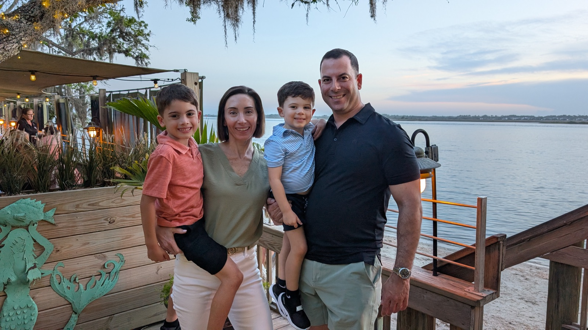

for Julington Creek Plantation CDD Board, Seat 1
Keeping Julington Creek the Community Families Choose.
Vote Tuesday, November 3, 2026
Why I'm Running
Zach and his wife Kristin have spent six years building their family in Julington Creek, raising their sons Ethan and Noah. Kristin is a Certified Registered Nurse Anesthetist. Zach is the Chief Operating Officer of a local business that serves law enforcement agencies across the country, and a Major and Judge Advocate in the Marine Corps Reserve. Earlier in his career he was a Director of Compliance for large financial institutions, running the anti-money laundering programs that keep criminal money out of the banking system.
Zach is in his fourth year on the JCP Property Owners Association board, where his fellow board members elected him President.
North Florida is going to keep building. More developments open every year, so families choosing where to live have more options than they used to. They compare schools and community first. Julington Creek has the schools, and we have raised the standard on our amenities over the last several years. I'm running to keep us moving in that direction.
Julington Creek has a character the communities around us have not matched. Keeping it takes a board that plans its spending and finishes what it starts. Running operations on a budget and holding vendors to what they agreed to is my day job, and it is what I intend to bring to the district.
I will protect the progress the current board has made and keep the CDD running as it moves from development into full community operations.
I will push for the renovation of the old rec center and keep it on the board's agenda until the work is done.
I will keep Julington Creek family-friendly and competitive with the best communities around us, so our amenities stay a reason families choose to move here.
Zach Malamud for Julington Creek Plantation CDD Board, Seat 1
I'd appreciate your vote.